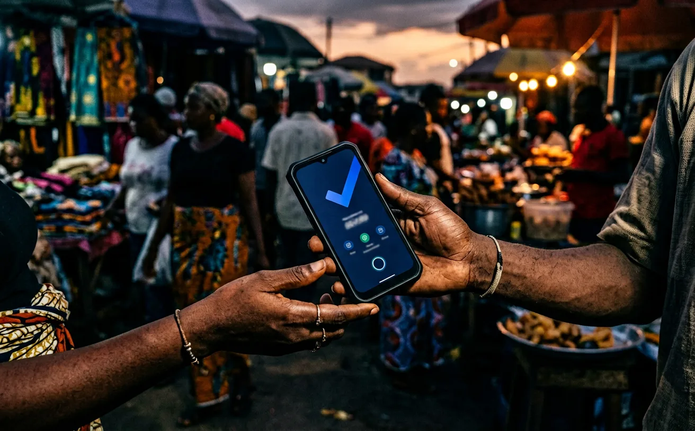
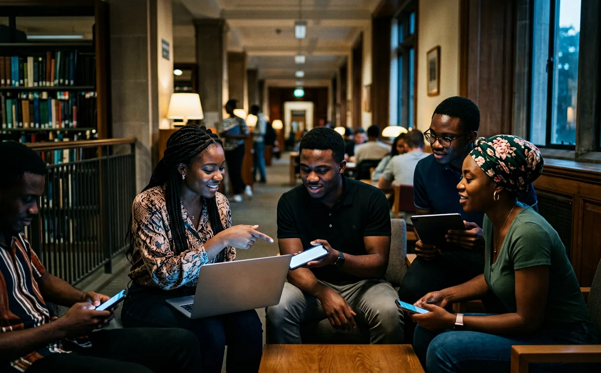
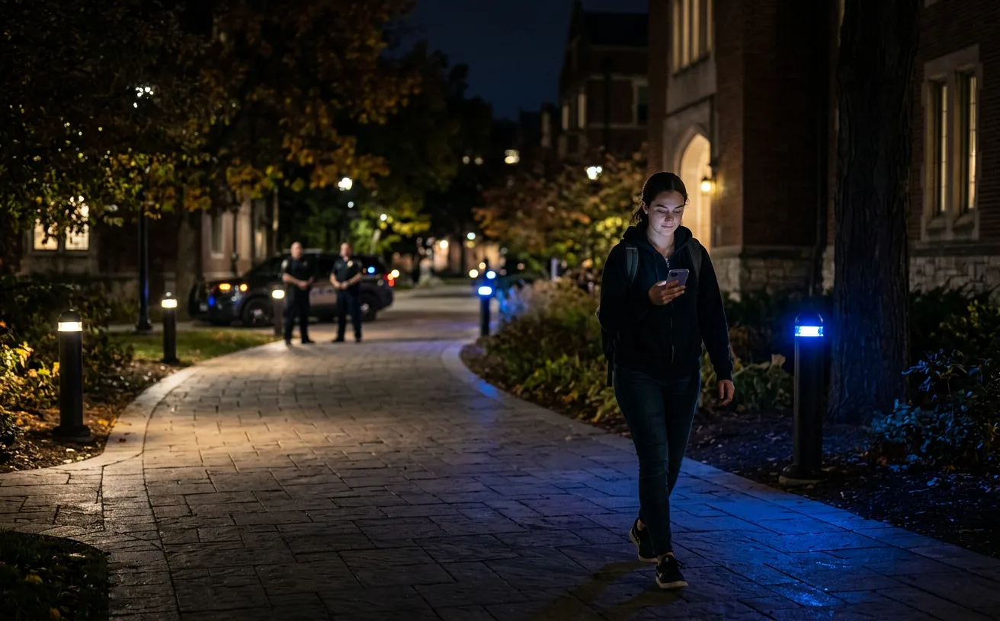
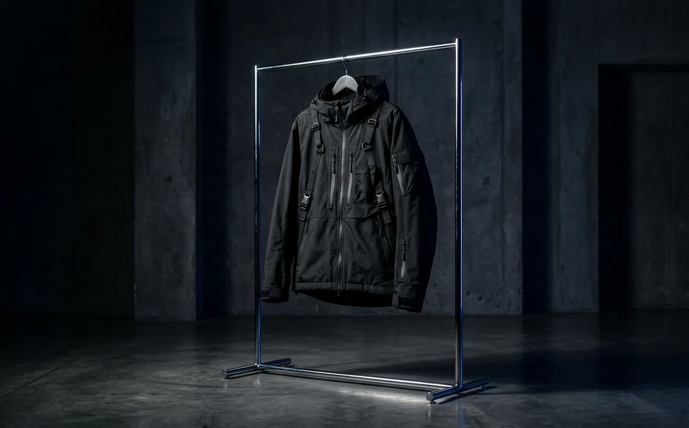

Fintech infrastructure
Pulse
A secure offline payment protocol for emerging markets, built around cryptographic guarantees and delayed settlement.
Open caseProduct designer and full-stack engineer
I turn offline constraints into secure, usable products for fintech, education, and ambitious teams.


Products where design and engineering meet unreliable networks, trust requirements, and people who need the tool to work now.

Fintech infrastructure
A secure offline payment protocol for emerging markets, built around cryptographic guarantees and delayed settlement.
Open caseOffline education
A BLE mesh learning network that helps coursework move across campus without dependable internet access.
Open case
Campus safety
A smart alert and emergency reporting system for KWASU students and campus security teams.
Open case
E-commerce experience
A fast React storefront with a stronger visual system, focused shopping flow, and cinematic product presentation.
Open caseStrategy, product design, frontend craft, and backend architecture stay in one feedback loop.
Tokens, components, and interaction rules that survive production pressure instead of stopping at Figma.
Local queues, sync logic, peer-to-peer handoff, and resilient product flows for unreliable connectivity.
Browser AI, product agents, data pipelines, and practical automation for teams that need leverage.
Visual systems that make hard engineering feel credible, clear, and worth trusting.
A few active threads, from campus learning networks to a studio practice for ambitious digital products.
The through-line is simple: learn the craft, ship the system, improve from real use.
Typography, layout, and visual systems became the first layer of the craft.
Client projects made the work practical: clearer goals, sharper delivery, better communication.
Engineering turned screens into usable products with real data, auth, APIs, and deployment.
Independent products became a way to test assumptions in public and learn faster.
The focus now is fintech infrastructure, offline-first systems, and AI-enabled product workflows.
Notes on product building, software engineering, startups, AI, and design.
How a lecture download problem became an offline learning network.
Jun 2026What I learned while shaping a design and development studio.
May 2026What works when machine learning runs directly in the client.
Apr 2026The decisions behind production-ready tokens and components.